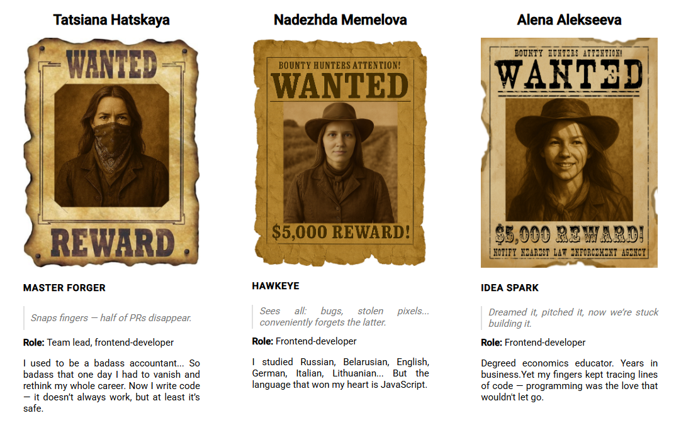
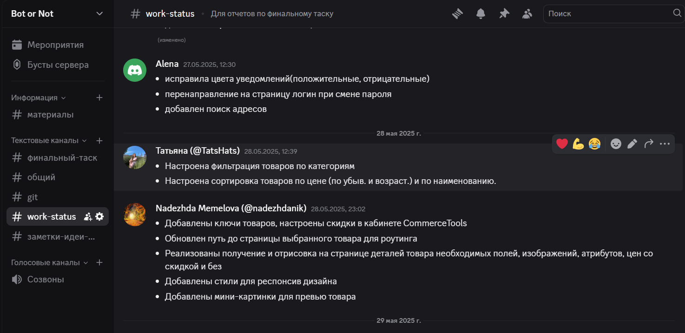
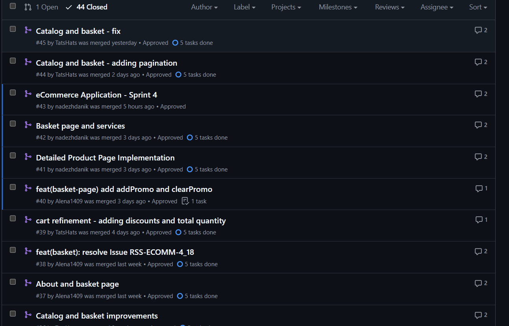
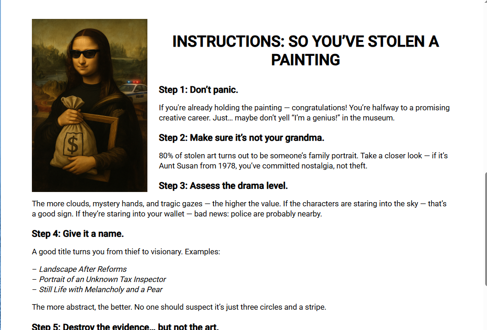
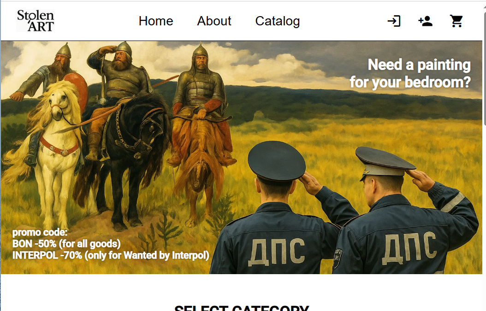

Final Project Presentation

1. Старт с трудностями
- Первый опыт работы с Angular, SCSS, Commercetools API.
- Совместный разбор документации и обучение от ментора.
- Использование Angular Material.
- «Не знаешь — спроси, понял — объясни другому».
2. Discord-митинги: от хаоса к системе
- Cозвоны 2-3 раза в неделю
- Отчет о проделанной работе в work-status
- Структурированние в Discord

3. Git и GitHub история нашего прогресса
- Конфликты при слиянии
- Ветки
- Пулл-реквесты
- Коммиты

4. Горящие глаза — лучший мотиватор
Когда проект увлекает, работа идет вдохновенно и до результата
Когда самим интересно возиться с наполнением контента, работа идет быстро, и не хочется бросать на полпути.

5. Не один в поле воин
Взаимная поддержка, обсуждения, результат

6. Идеальное планирование vs реальность
- Jira доска
- Poker sizing оценка